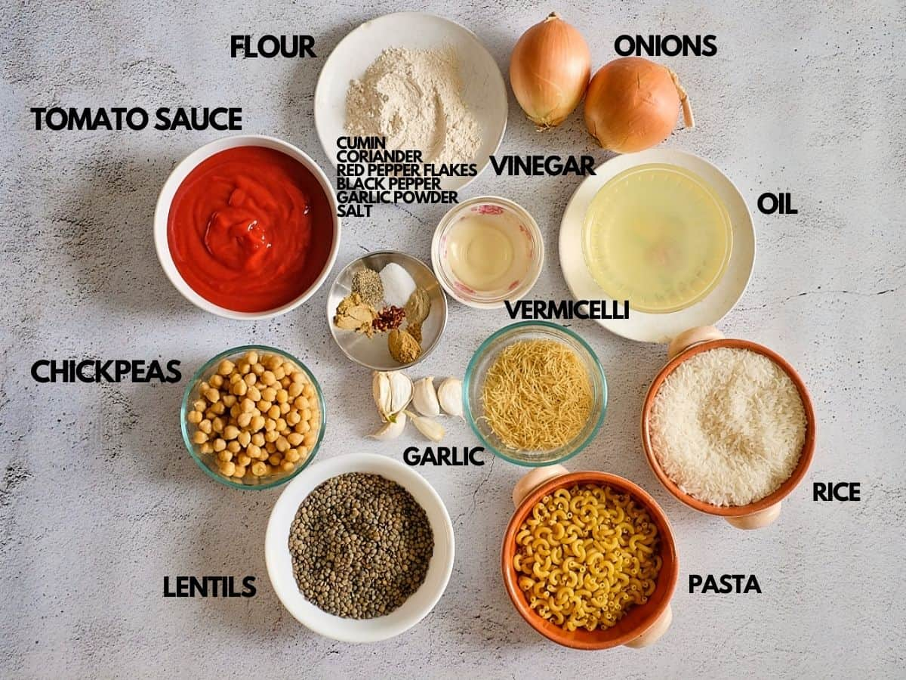
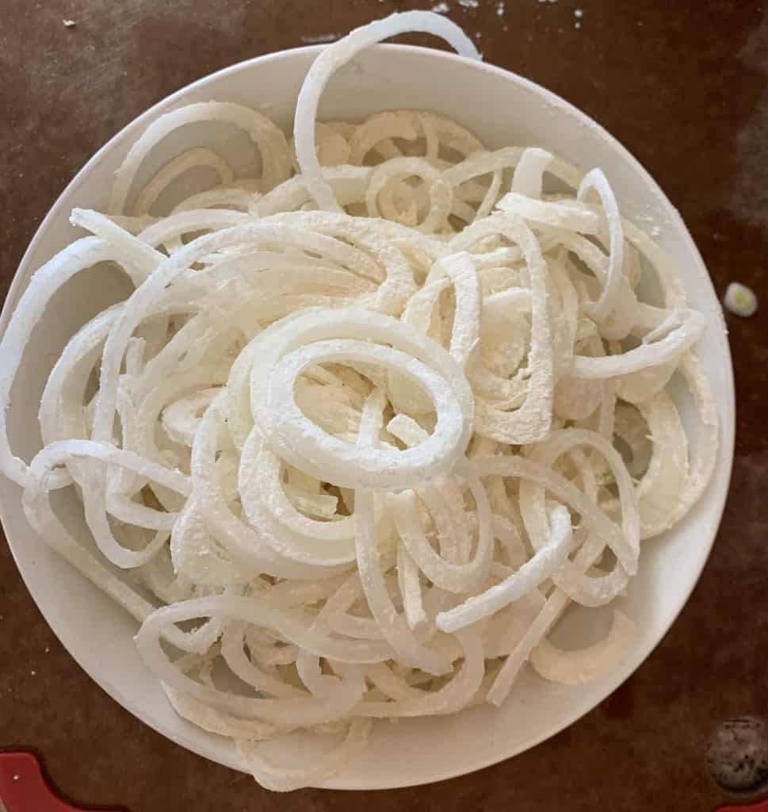
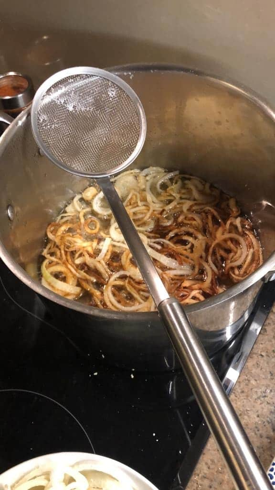
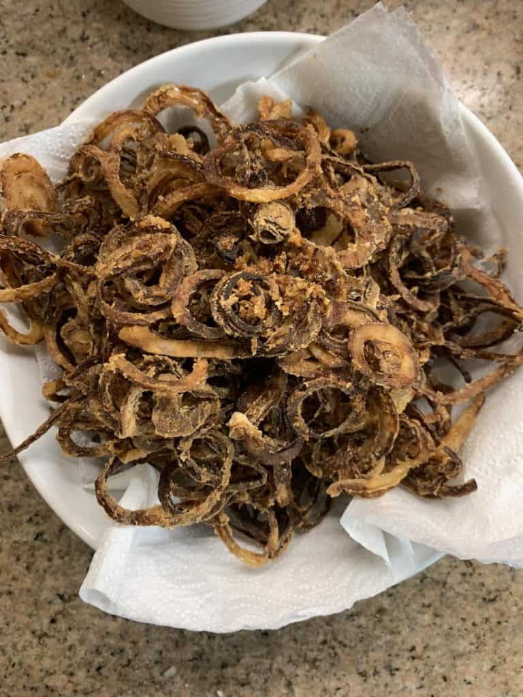
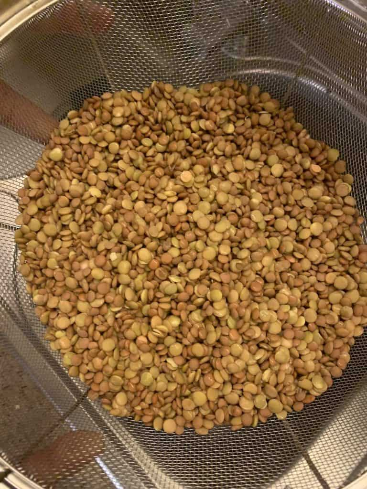
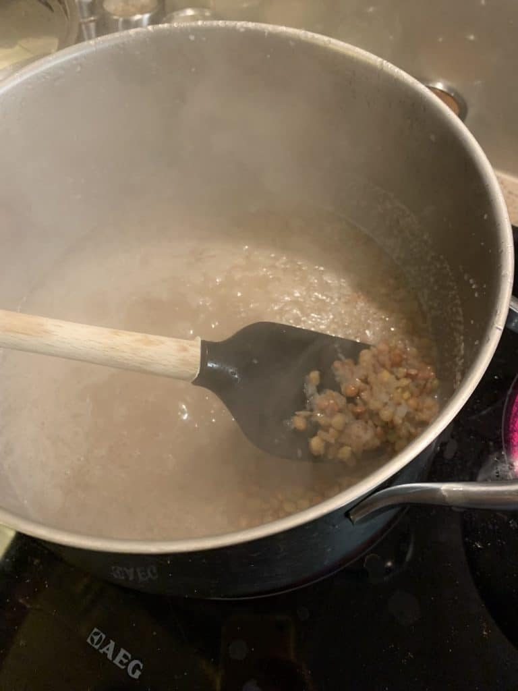
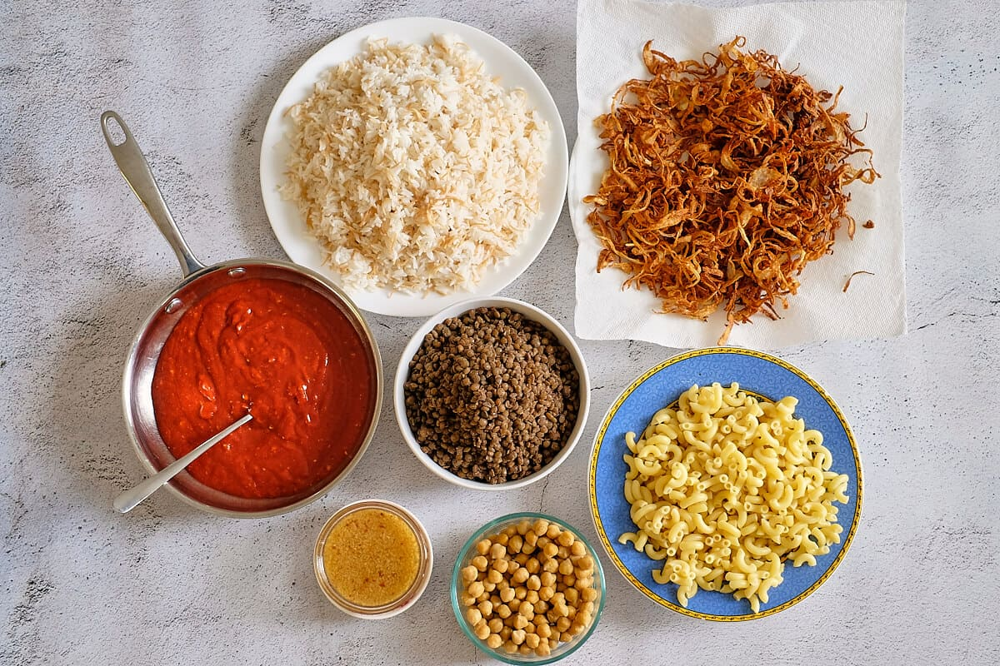
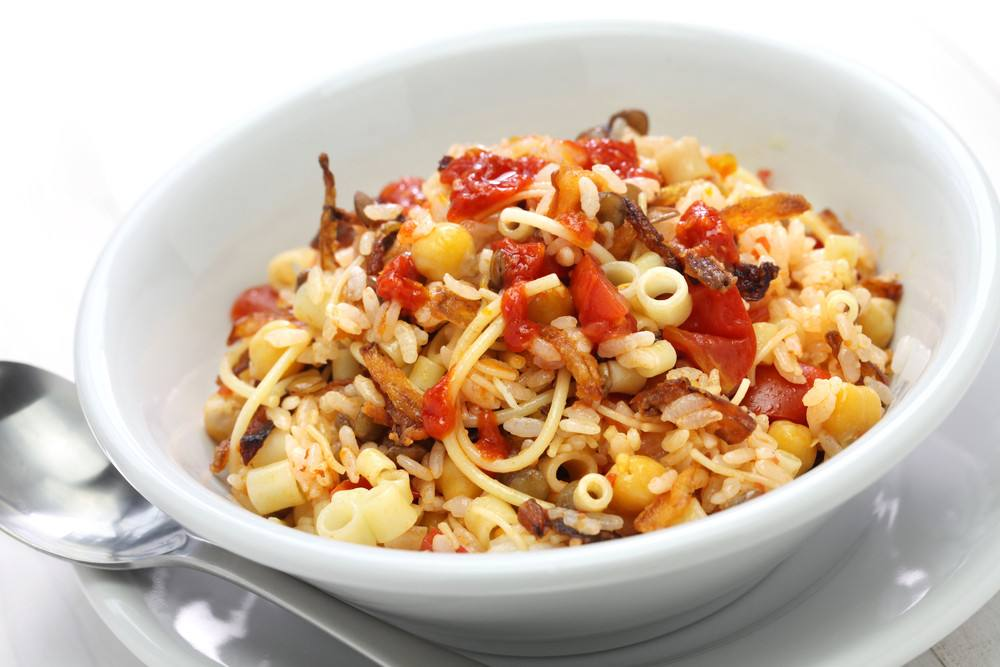

INGREDIENTS
1- Tomatoes 2- Pasta 3- Onions 4- Rice 5- Lentils 6- Garlic 7- Chickpeas
cooking method
Step 1:
Heat 1/4 cup oil in a large heavy-based saucepan over high heat. Cook onion, stirring, for 6 minutes or until golden. Using a slotted spoon, transfer to a plate lined with paper towel.
  Step 2:
Add cumin, cinnamon and mixed spice to the pan. Cook, stirring, for 30 seconds or until fragrant. Add stock powder, lentils and 1 litre of water. Cover. Bring to the boil. Reduce heat to medium. Cook for 15 minutes or until lentils are half-cooked.
 Step 3:
Add pasta, rice and 1/2 cup water to pan. Cover. Return to a simmer. Reduce heat to low. Simmer for a further 15 minutes or until lentils, rice and pasta are tender.
Step 4:
Meanwhile, combine the tomato, eschalot, parsley, vinegar and remaining oil in a medium bowl. Season with salt and pepper. Set aside for 15 minutes to allow the flavours to develop.
Step 5:
Remove koshari from heat. Stand for 5 minutes. Fluff with a fork. Serve topped with the caramelised onion and tomato salad.
 